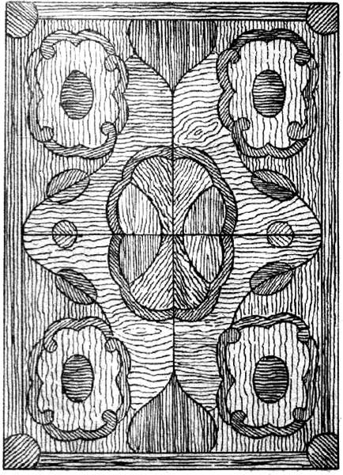

Тон и плоскость.

Тон детали из дерева зависит от породы и частично от текстуры древесины. При сочетании разных пород древесины с естественной окраской надо учитывать возможность гармоничного сочетания текстур, отличающихся по своему строению, что может быть заметно при близком рассматривании. Возможность дополнительной окраски дерева значительно увеличивает декоративно-орнаментальные возможности тоновых сочетаний дерева.

Рис. 35. Композиция, основанная на тоновом сочетании рисунка и текстуры
Тоновые сочетания кусков древесины, будучи по своей сути живописными, в нюансных соотношениях дают игру поверхности с изменением рисунка в зависимости от освещения и направления волокон. Тогда очень велико значение текстуры деревянной поверхности. Создание орнаментальных мотивов в этом случае целесообразно лишь в случаях, когда предмет подлежит рассматриванию с близкого расстояния (столешницы и др.). В соотношениях более контрастных, где тон сочетаемых кусков дерева существенно отличается друг от друга, значение текстуры уменьшается, на первый план выступают формы смежных кусков.
Тоновые композиции являются основным приемом отделки гладких орнаментированных поверхностей, это особенно касается тех, которые не могут иметь рельефных украшений в силу своего назначения (те же столешницы).
Ровные тоновые плоскости удобны в изготовлении и отделке. Так как они собираются из относительно крупных кусков шпона, то пригодны для изготовления объемных предметов мебели с большими поверхностями. Живописный характер тоновых орнаментировок соответственно влечет за собой и необходимость живописного их расположения на плоскости, выражаемого в различии размеров сочетаемых деталей, характере линий стыков и границ самих плоскостей. Поэтому излишне нагруженные геометрическими фигурами рисунки должны применяться в тоновых орнаментах мебельных деталей ограниченно.
Живописности тоновых решений существенно помогает и цвет дерева, которым не следует пренебрегать. За счет использования цвета дерева можно в рядовой набор шпона ввести внутреннюю динамику и создать как движение к композиционному центру орнамента, так и сам центр.
Орнаментальные композиции мебельных плоскостей, основанные на тоновых соотношениях, не должны разрушать восприятие плоскости вне зависимости от того, нюансный или контрастный характер имеет этот орнамент.
Составление орнаментальной плоскости на основе подбора симметричного рисунка шпона требует четкого представления конструкции этой плоскости. Щитовые дверки шкафа можно так перегрузить набором симметричных рисунков, что пропадет ощущение деревянной основы, а сама конструкция покажется неестественной.